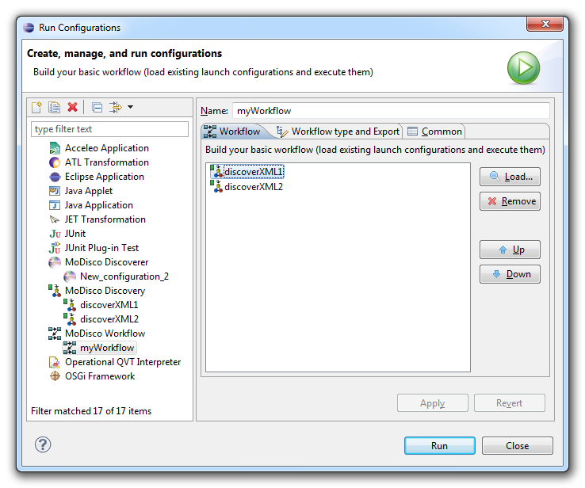
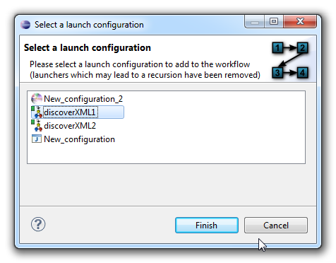

MoDisco workflow provides a mechanism to initialize and launch a workflow of discoverers, generators and model transformations. These workflows are defined on top of the Eclipse platform's launch configuration mechanism.
A MoDisco workflow is created as a launch configuration, which itself consists of an ordered list of launch configurations. When launching the workflow, each launch configuration is launched in the order specified in the workflow.
A MoDisco workflow is defined in a launch configuration: select Run > Run Configurations... in the main menu, or click on the arrow on the Run button in the toolbar and then select Run Configurations....

You can now build your MoDiscoWorkflow:
The workflow component provides a simple workflow engine (only sequential execution, no binding of parameters, etc.).
After clicking on the "Load..." button, you must choose a launch configuration to add to the workflow:

When you have finished building your MoDiscoWorkflow, click on the Run button. An error window opens if one or more MoDiscoWork items are not valid. Every MoDiscoWork item must be valid in order to be able to run the MoDiscoWorkflow.
It is currently not possible to bind the parameters between components. Furthermore, the workflow is executed in a sequential way.